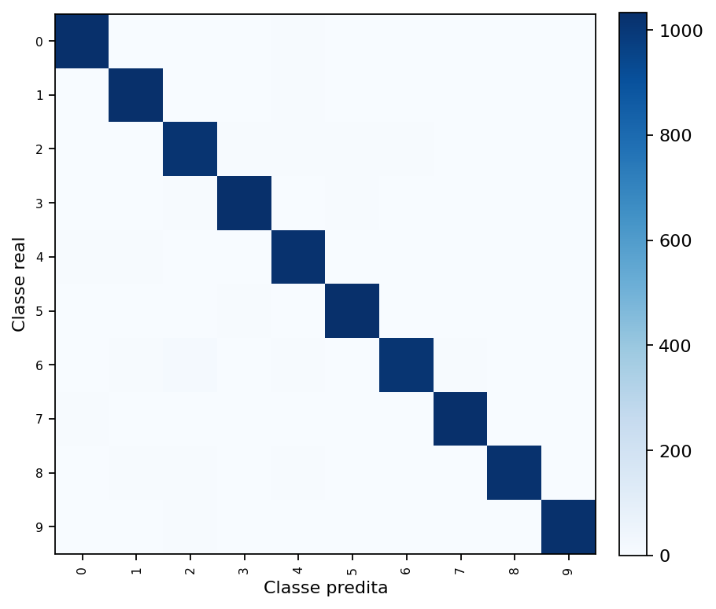
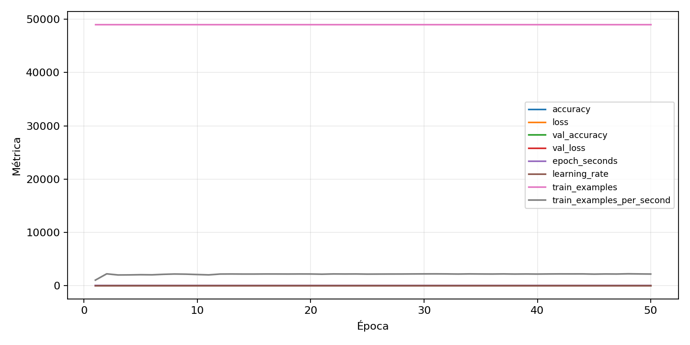

| n_samples | 10500 |
|---|---|
| loss | 0.11795450001955032 |
| accuracy | 0.9772380952380952 |
| balanced_accuracy | 0.9772380952380952 |
| macro_f1 | 0.977249864907316 |


| Índice | Classe | Suporte | Precisão | Recall | F1 |
|---|---|---|---|---|---|
| 0 | 0 | 1050 | 0.9781990521327014 | 0.9828571428571429 | 0.9805225653206651 |
| 1 | 1 | 1050 | 0.978240302743614 | 0.9847619047619047 | 0.9814902705268154 |
| 2 | 2 | 1050 | 0.9612109744560076 | 0.9676190476190476 | 0.9644043663977219 |
| 3 | 3 | 1050 | 0.9800190294957184 | 0.9809523809523809 | 0.9804854831032842 |
| 4 | 4 | 1050 | 0.9597378277153558 | 0.9761904761904762 | 0.967894239848914 |
| 5 | 5 | 1050 | 0.9847182425978988 | 0.981904761904762 | 0.9833094897472581 |
| 6 | 6 | 1050 | 0.9853658536585366 | 0.9619047619047619 | 0.9734939759036144 |
| 7 | 7 | 1050 | 0.9717247879359096 | 0.981904761904762 | 0.9767882520132639 |
| 8 | 8 | 1050 | 0.983669548511047 | 0.9752380952380952 | 0.9794356767097082 |
| 9 | 9 | 1050 | 0.9903660886319846 | 0.979047619047619 | 0.9846743295019158 |
{"adapter":"kmnist","balance_mode":"all_raw","class_names":["0","1","2","3","4","5","6","7","8","9"],"dataset":"kmnist","dataset_options":{},"dataset_root":"/home/msduda/datasets-tcc/kmnist","native_channels":1,"normalization":"unit_interval","num_classes":10,"protocol":{"checkpoint_monitor":"val_macro_f1","dtype_policy":"float32","early_stopping":{"patience":50,"restore_best_weights":true},"evaluation_augmentation":false,"input_channels":"native","op_determinism":false,"optimizer":"Adam","pretrained_weights":false,"qat_weight_bits":8,"reduce_lr_on_plateau":{"factor":0.3,"min_lr":1e-07,"patience":50},"resize":"proportional_padding","test_time_augmentation":false,"training_from_scratch":true},"seed":42,"source_fingerprint":"8928d478d8d23938a73b4f4a92c407bf3d74beff1e0e67e3644d6ecdc30cf828","source_manifest":{"class_names":["0","1","2","3","4","5","6","7","8","9"],"joined_samples":70000,"metadata":{"layout":"kmnist-component-npz"},"name":"kmnist","native_channels":1,"source_path":"/home/msduda/datasets-tcc/kmnist","splits":{"test":10000,"train":60000},"target_size":64},"target_size":64,"test_fraction":0.15,"train_fraction":0.7,"training":{"augmentation":{"brightness_delta":0.0,"contrast_lower":1.0,"contrast_upper":1.0,"cutout_max_frac":0.0,"cutout_prob":0.0,"flip_lr":false,"noise_std":0.0,"translate_frac":0.0,"zoom_max":1.0,"zoom_min":1.0},"batch_size":256,"default_image_size":64,"dtype_policy":"float32","early_stopping_patience":50,"extra_fraction":0.0,"image_size_overrides":{"gtsrb":128},"keras_verbose":1,"learning_rate":0.0003,"max_epochs":50,"preprocess_cache_max_mib":0,"qat_weight_bits":8,"reduce_lr_factor":0.3,"reduce_lr_min_lr":1e-07,"reduce_lr_patience":50,"shuffle_buffer_max_mib":0},"validation_fraction":0.15}
{"epochs_completed":50,"epochs_recorded":50,"evaluation_seconds":9.29585820200009,"fit_seconds_current_attempt":1803.7977795839997,"max_epoch_seconds":46.674139500999445,"max_epochs":50,"mean_epoch_seconds":22.953812792479912,"mean_train_examples_per_second":2159.4236867824934,"median_train_examples_per_second":2198.074514147379,"min_epoch_seconds":21.90689277399906,"selected_checkpoint":"/mnt/e/tcc-benchmark/outputs/kmnist-quantization-2026-08-09/int8_qat/kmnist/runs/kmnist__unit_interval__all_raw__seed-42/checkpoints/best.keras","tensorflow_gpu_memory_after":{"GPU:0":{"current":5382144,"peak":702195200}},"total_seconds":1147.6906396239956,"training_seconds":1147.6906396239956,"wall_seconds_current_attempt":1816.8664138420008}
{"elapsed_seconds":1816.785420627999,"event_counts":{"data_preparation_end":1,"data_preparation_start":1,"epoch_end":50,"evaluation_end":1,"evaluation_start":1,"fit_end":1,"fit_start":1,"periodic":356,"run_completed":1,"train_start":1},"generated_at":"2026-08-09T22:47:56.984+00:00","gpu_backend":"pynvml","interval_seconds":5.0,"metrics":{"cpu_percent":{"count":414,"max":47.8,"mean":25.72608695652174,"min":0.0,"p50":26.3,"p95":46.035000000000004},"disk_data_free_bytes":{"count":414,"max":998271504384.0,"mean":998271441331.3237,"min":998271430656.0,"p50":998271442944.0,"p95":998271442944.0},"disk_data_percent":{"count":414,"max":2.7,"mean":2.7000000000000006,"min":2.7,"p50":2.7,"p95":2.7},"disk_data_total_bytes":{"count":414,"max":1081101176832.0,"mean":1081101176832.0,"min":1081101176832.0,"p50":1081101176832.0,"p95":1081101176832.0},"disk_data_used_bytes":{"count":414,"max":27837390848.0,"mean":27837380172.676327,"min":27837317120.0,"p50":27837378560.0,"p95":27837382656.0},"disk_output_free_bytes":{"count":414,"max":207156449280.0,"mean":207148357909.02414,"min":207147565056.0,"p50":207147802624.0,"p95":207148490752.0},"disk_output_percent":{"count":414,"max":79.3,"mean":79.3,"min":79.3,"p50":79.3,"p95":79.3},"disk_output_total_bytes":{"count":414,"max":1000186310656.0,"mean":1000186310656.0,"min":1000186310656.0,"p50":1000186310656.0,"p95":1000186310656.0},"disk_output_used_bytes":{"count":414,"max":793038745600.0,"mean":793037952746.9758,"min":793029861376.0,"p50":793038508032.0,"p95":793038667776.0},"elapsed_seconds":{"count":414,"max":1816.729881,"mean":914.5823153381642,"min":0.029354,"p50":916.309079,"p95":1740.5632290500002},"gpu_count":{"count":414,"max":1.0,"mean":1.0,"min":1.0,"p50":1.0,"p95":1.0},"gpu_memory_percent":{"count":414,"max":56.497907638549805,"mean":55.417857884208935,"min":42.99921989440918,"p50":55.64131736755371,"p95":55.786848068237305},"gpu_memory_total_bytes":{"count":414,"max":8589934592.0,"mean":8589934592.0,"min":8589934592.0,"p50":8589934592.0,"p95":8589934592.0},"gpu_memory_used_bytes":{"count":414,"max":4853133312.0,"mean":4760357744.541062,"min":3693604864.0,"p50":4779552768.0,"p95":4792053760.0},"gpu_temperature_c":{"count":414,"max":60.0,"mean":53.22222222222222,"min":41.0,"p50":52.0,"p95":59.0},"gpu_utilization_percent":{"count":414,"max":79.0,"mean":45.34057971014493,"min":5.0,"p50":37.0,"p95":75.35000000000002},"process_cpu_percent":{"count":414,"max":654.3,"mean":327.62391304347824,"min":0.0,"p50":428.9,"p95":599.2},"process_read_bytes":{"count":414,"max":30269440.0,"mean":29677696.618357487,"min":0.0,"p50":30269440.0,"p95":30269440.0},"process_rss_bytes":{"count":414,"max":3314995200.0,"mean":3173551603.63285,"min":1126604800.0,"p50":3233710080.0,"p95":3298806784.0},"process_vms_bytes":{"count":414,"max":48331415552.0,"mean":48085805402.28019,"min":41773907968.0,"p50":48229654528.0,"p95":48331415552.0},"process_write_bytes":{"count":414,"max":1130496.0,"mean":1116555.7487922704,"min":4096.0,"p50":1130496.0,"p95":1130496.0},"ram_available_bytes":{"count":414,"max":14570479616.0,"mean":12692599070.917875,"min":12555460608.0,"p50":12633905152.0,"p95":12940970188.8},"ram_percent":{"count":414,"max":24.5,"mean":23.627536231884058,"min":12.3,"p50":24.0,"p95":24.3},"ram_total_bytes":{"count":414,"max":16619089920.0,"mean":16619089920.0,"min":16619089920.0,"p50":16619089920.0,"p95":16619089920.0},"ram_used_bytes":{"count":414,"max":4063629312.0,"mean":3926490849.0821257,"min":2048610304.0,"p50":3985184768.0,"p95":4046123417.6}},"sample_count":414,"schema_version":1}